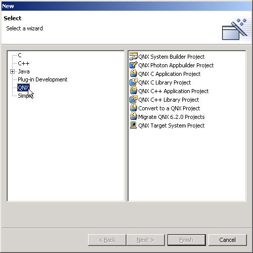
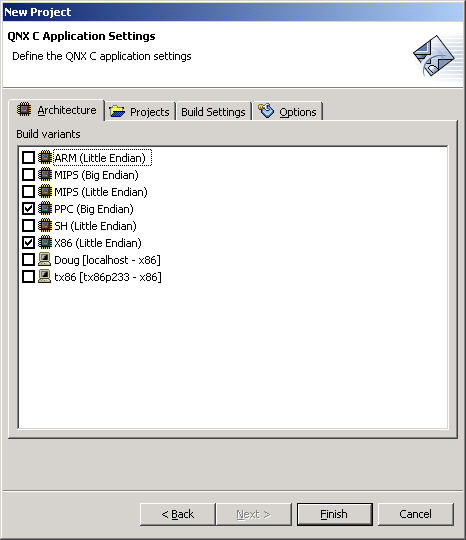
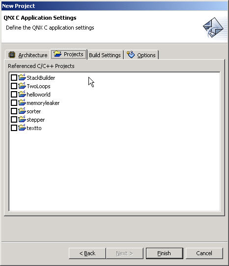
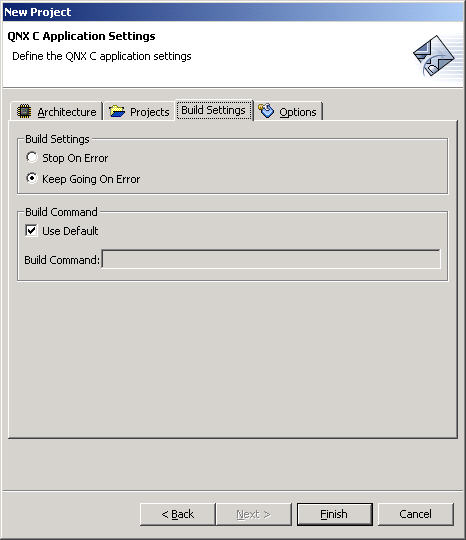
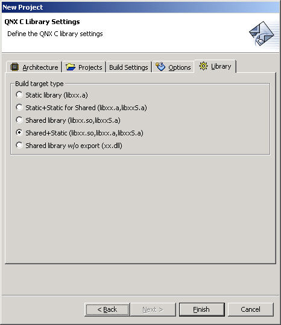
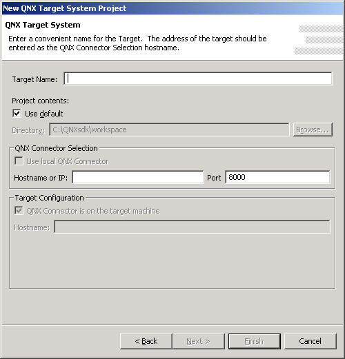
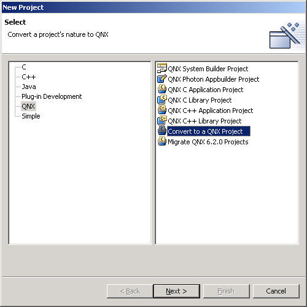

In this chapter:
Wizards guide you through a sequenced set of tasks. In the IDE, these tasks may
be creating something new (e.g. a project) or converting one thing to another
(e.g. converting to a Standard C project). Most often, you use wizards to create
new projects and folders.
Wizards aren't directly connected to any perspective, though you're more likely to call them from some perspectives than from others (most likely from the C/C++ Development perspective).
You can access all the wizards from the main menu by selecting File-->New. The File-->New-->Project selection filters out all the wizards except projects; File-->New-->Other doesn't filter anything. (The exception to this is Target System Project, which, while labeled as a project, isn't a project as far as the IDE is concerned.)
In the New Project dialog, the wizards are further sorted: selecting C in the left pane displays all the projects with a C nature in the IDE; selecting QNX in the left pane shows all the projects with a QNX nature:

Notice the overlap: the QNX C Application Project wizard appears in the right pane for both C and QNX.
So-called "simple" wizards show the very basic elements of projects: Project, Folder, and File. These elements have no natures associated with them. You can access the wizards for these by selecting File-->New-->Other, then selecting Simple from the left pane.
 |
Although projects may appear as directories in your workspace, the IDE attaches special meaning to them. The IDE won't automatically recognize a directory you create in your workspace directory as a project.
The IDE automatically recognizes directories and new files of any type if you create them outside of the IDE (i.e. using Windows Explorer) and place them in a project directory. To have the IDE recognize them, in the Navigator view, right-click the navigator pane and select Refresh. |
The New Project wizard helps you create a C or C++ project.
This section includes:
The IDE lets you create a variety of projects, each with certain properties. Most of these projects are also subdivided into C or C++ projects:
- Standard Make C Project
Standard Make C++ Project
- A basic C or C++ project that uses a standard makefile and GNU make to build the source files. You don't get the added functionality provided by the QNX build organization and the common.mk file.
To create a C/C++ project :
- From the menu, select File-->New-->Project.
The New dialog appears. Projects are filtered by the natures listed in the left pane.
- In the left pane, select the nature in the table:
| If you want to build:
|
Select: |
| Standard Make C Application Project
|
C |
| QNX C Application Project
|
C or QNX |
| QNX C Library Project
|
C or QNX |
| Standard Make C++ Application Project
|
C++ |
| QNX C++ Application Project
|
C++ or QNX |
| QNX C++ Library Project
|
C++ or QNX |
- In the right pane, select the type of project that you want (e.g. QNX C Application Project).
- Click Next.
- Type a name for your project in the Name field.
- Ensure that Use Default Location is checked. Don't use a different location.
- Click Next.
The wizard displays the appropriate tabs.
- Select each tab and fill in the required information. The fields for each tab are described in the "New C/C++ Project wizard tabs" section, below.
- Click Finish.
The IDE creates your new project in your workspace.
|
In the C/C++ Development perspective, you can also access the QNX C/C++ Projects with the
 buttons.
buttons.
|
Depending on the type of project you choose, the New Project wizard displays different tabs:
| Project Type
|
Architecture tab,
Options tab
|
Projects tab,
Build Settings tab
|
Library tab
|
Standard Make C Project or
Standard Make C++ Project
|
Yes
|
No
|
No
|
QNX C Application Project or
QNX C++ Application Project
|
Yes
|
Yes
|
No
|
QNX C Library Project or
QNX C++ Library Project
|
Yes
|
Yes
|
Yes
|
|
You can find the default settings for the New Project wizard by selecting Window-->Preferences from the main menu. From the left pane, select C/C++, then New QNX Projects. |
The Architecture tab lets you choose the platforms to compile executables for:

For example, to build for a PowerPC platform, enable PPC (Big Endian).
If you've already created a QNX Target System Project, you'll also see entries such as Doug [localhost - x 86]. These let you build specifically for a configured target. If you also enable X86 (Little Endian), the IDE builds only one executable, not two.
You must choose at least one platform.
The Projects tab lets you configure your preferred order of building:

For example, if you associate myProject with mySubProject, the IDE builds mySubProject first during rebuilds. If you change mySubProject, the IDE doesn't automatically rebuild myProject.
The Build Settings tab lets you configure how the IDE handles make errors and what command to use to build your project:

- Build Settings
- If you want the IDE to stop building when it encounters a make error, enable Stop on Error. Otherwise, enable Keep Going On Error.
- Build Command
- If you want the IDE to use the default make command, enable Use Default. If you want to use a different utility to build your project, disable Use Default and enter your own command in the Build Command field (e.g. C:\myCustomizedMakeProgram).
The Options tab lets you choose what type of executables the IDE builds:

- Build Type
- To build a regular executable, enable Build release version. To build a debuggable executable, enable Build debug version (debug versions have _g appended to their filename).
You must select at least one build type.
- Build Options
- To fully enable profiling with the QNX Application Profiler perspective, enable Build with Profiling. The IDE adds profiling code to all the versions selected in Build Types. See the Profiling Your Application chapter.
The Library tab lets you choose the type of library you wish to build (e.g. Static library, Shared library):

- Static library (libxx.a)
- Combine binary object files (i.e. *.o) into an archive that will later be directly linked into an executable.
- Shared library (libxx.so)
- Combine binary objects together and join them so they are relocatable and can be shared by many processes. Shared libraries are named using the format libxx.so.version, where version is a number with a default of 1. The libxx.so file symlinks to the latest version.
- Static library for shared objects (libxxS.a)
- Same as static library, but using position-independent code (PIC). Use this for a library that will later be linked into a shared object. The System Builder uses these types of libraries to create new shared libraries that contain only the symbols that are absolutely required by a specific set of programs.
- Shared library without export (xx.so)
- A shared library without versioning. Generally, you manually open the library with the dlopen() function and look up specific functions with the dlsym() function.
You must choose one of the options.
You must create a Target System Project for every target you have. When you create a launch configuration, you have the option of adding a new target from within the Launch Configurations dialog. When you do, the IDE opens up the New Target System Project wizard.
To create a new target:
- From the menu, select File-->New-->Other.
- In the left pane, select QNX.
- In the right pane, select QNX Target System Project.
- Click Next.
The New QNX Target System Project wizard appears:

- Fill in the fields described below:
- Target Name
- Type a descriptive name for your QNX Target System Project.
- Project contents
- Enable Use default to store it in your workspace, or disable it and select another location in the Directory field.
- QNX Connector Selection
- Type the target connection in the Hostname or IP and Port fields. If you're running the IDE on a QNX Neutrino machine running qconn, make sure Use local QNX Connector is enabled; the IDE automatically fills in the connection information. (If you wish to connect to a different target, you may disable Use local QNX Connector and fill in the fields manually.)
- Target Configuration
- This section is for a future feature.
- Click Finish.
Your new QNX Target System Project appears in the Navigator view. When you create a Launch Configuration, the target is listed under the Main tab in the Target Options pane.
|
You can also reach the New Target System Project wizard by right-clicking in the Target Options pane and selecting Add target. |
At various times, you may want to convert projects to give them a QNX nature. For example:
- if other developers committed a project to CVS without the .project and .cdtproject files, the IDE won't recognize the project as a QNX project when you get it from CVS
- you wish to turn a Standard Make C/C++ Project into a QNX C/C++ Application Project.
The QNX nature causes the IDE to use QNX make tools and the QNX make structure when building them.
The IDE lets you convert many projects in the same step, but the projects are all converted into projects of the same type.
|
If you wish to convert a QNX Project back into a Standard Make C/C++ Project, you can use the Convert C/C++ Projects wizard. From the main menu, select File-->New-->Project. In the left pane, select C. In the right pane, select Convert to a C or C++ Project. |
To convert to a QNX Project:
- From the menu, select File-->New-->Project.
- In the left pane, select QNX.
- In the right pane, select Convert to a QNX Project:

- Click Next.
- Fill in the fields described below:
The fields let you to convert a selection of projects to one of the following types of projects:
- QNX C Application Project
- QNX C Library Project
- QNX C++ Application Project
- QNX C++ Library Project
- Candidates for conversion
- The IDE lists all the projects that can be converted. Check off all the projects you wish to convert.
- Convert to C or C++
- Select whether your projects are C or C++.
- Convert to QNX project type
- Select QNX Application Project or QNX Library Project, depending on whether or not your projects are applications or libraries.
- Click Finish.